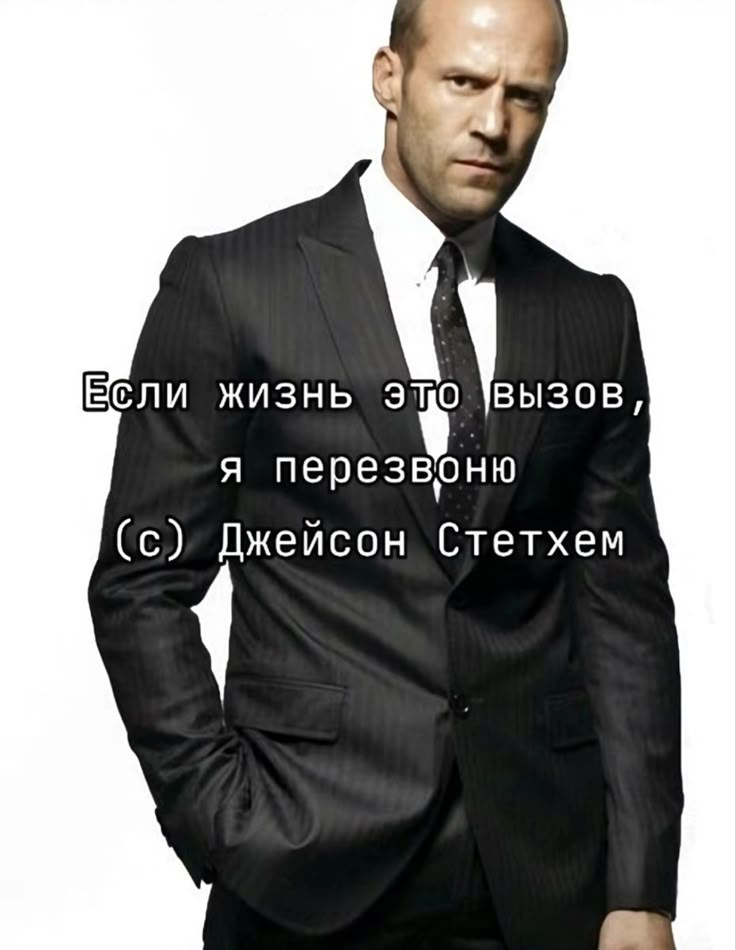

Jason Statham

Brief Biography
Jason Statham is a famous British actor and a global action movie superstar. Before starting his acting career, he was seriously involved in sports and was a member of Britain's National Diving Squad for 12 years.
His path in cinema began thanks to meeting director Guy Ritchie, who cast him in leading roles in the crime comedies "Lock, Stock and Two Smoking Barrels" and "Snatch". Since then, Statham has become one of the most recognizable action heroes, starring in successful franchises such as "The Transporter", "Crank", "The Expendables", and "Fast & Furious".
Interesting Facts
- Statham is a master of martial arts (jiu-jitsu, kickboxing), which is why he performs most of the dangerous stunts on set himself.
- Before becoming famous, he worked as a street seller of perfume and jewelry, and was also a model for the French Connection brand.
- In his youth, he was passionate about football and played for a local team alongside actor Vinnie Jones.